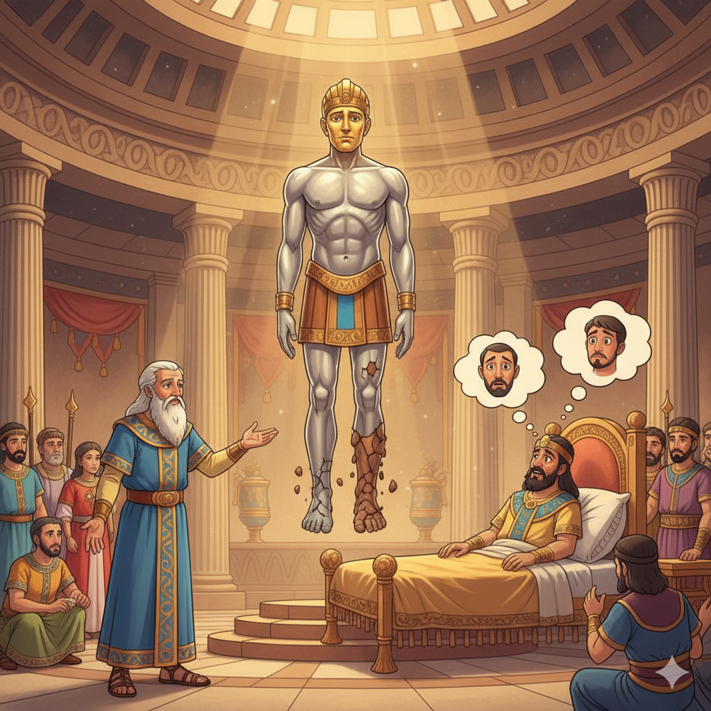
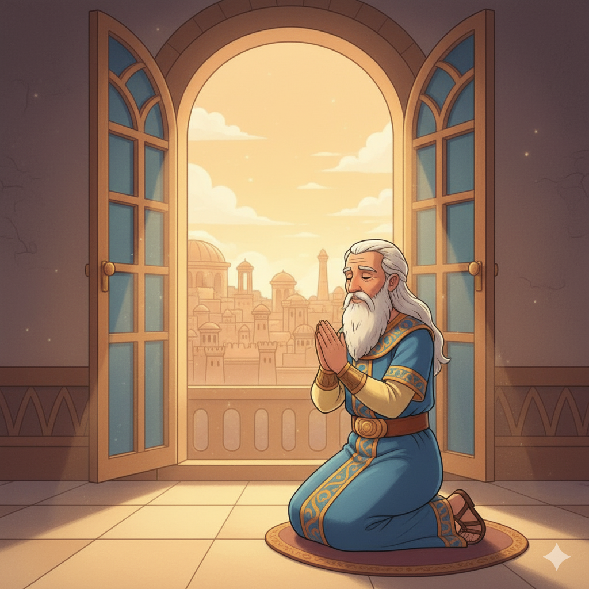

Um Jovem Fiél à Deus — Um Resumo Visual para Crianças
Daniel orava três vezes por dia, mesmo sabendo que podia colocá-lo em perigo,
mas Deus o salvou milagrosamente, mostrando que a fé verdadeira é recompensada.
Referência: Daniel 6:10
Daniel interpretou sonhos e viu visões sobre o futuro, demonstrando que Deus está no controle da história
e queEle honra quem confia Nele.
Referência: Daniel 2:1-49
Daniel permaneceu fiel a Deus, mesmo na cova dos leões, e foi milagrosamente protegido,
mostrando que coragem e fé em Deus podem nos proteger em qualquer situação.
Referência: Daniel 6:1-28
Daniel, um jovem fiel a Deus, e seus amigos Hananias, Misael e Azarias (também conhecidos como Sadraque, Mesaque e Abede-Nego).
Daniel foi levado para a Babilônia, mas permaneceu fiel a Deus. Ele interpretou sonhos e viu visões sobre o futuro.
Mostra que coragem e fé em Deus podem nos proteger até na cova dos leões!
Ensinar que Deus está no controle da história e honra quem confia Nele.
Daniel orava três vezes por dia, mesmo sabendo que isso poderia colocá-lo em perigo — e Deus o salvou milagrosamente!
Trilho Kids | Desenvolvido com ❤️ para criança © 2025